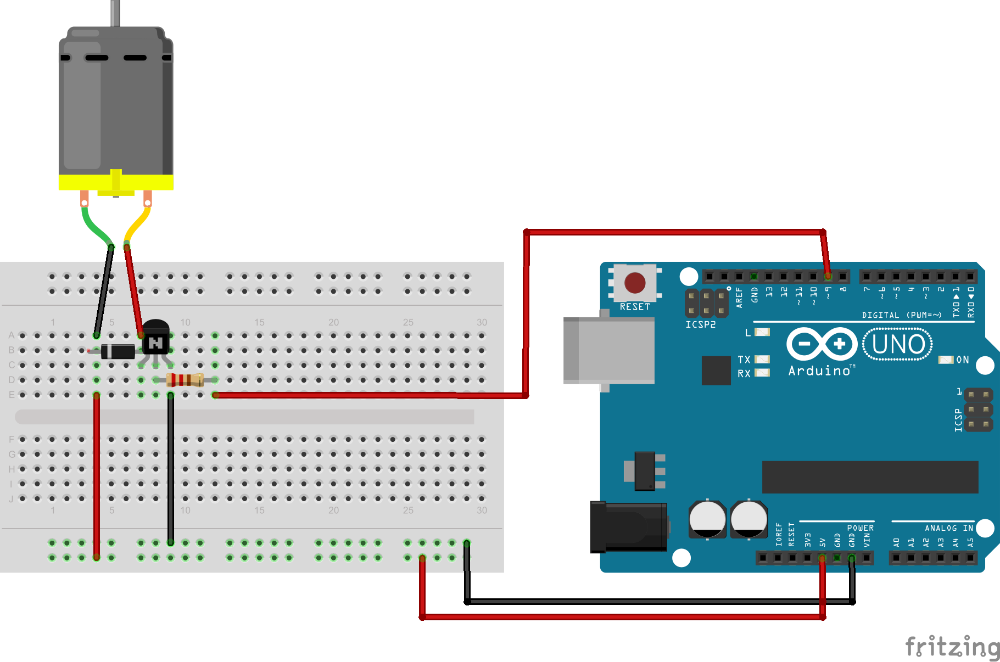

Unlike servo motors, standard DC motors just spin when power is applied. To control their speed, we can't just lower the voltage easily. Instead, we use a technique called Pulse Width Modulation (PWM) to rapidly switch the power on and off, creating the illusion of lower voltage and slower speed.
1. Concept and Description
Unlike servo motors, standard DC motors just spin when power is applied. To control their speed, we can't just lower the voltage easily. Instead, we use a technique called Pulse Width Modulation (PWM) to rapidly switch the power on and off, creating the illusion of lower voltage and slower speed.
2. Components Needed
Arduino Uno Board
USB Cable
Small DC Motor (3V-6V)
NPN Transistor (PN2222, 2N2222, or TIP120 for larger motors)
Diode (1N4001 or 1N4007) - Flyback protection
1kΩ Resistor (for transistor base)
Potentiometer (optional, for speed control knob)
Battery Pack (recommended for motor power)
Jumper Wires
3. Physical Montage (Wiring Instructions)

WARNING: Do not connect the motor directly to the Arduino pins! It draws too much current and can damage the board. Use a transistor.
Transistor Collector to Motor Negative (-)
Transistor Emitter to GND
Transistor Base to 1kΩ Resistor, then to Arduino Pin 3 (PWM)
Motor Positive (+) to Battery Positive (+)
Battery Negative (-) to Arduino GND (Common Ground)
Diode across the motor terminals (Stripe/Cathode to Positive, Anode to Negative) to protect against voltage spikes.
4. The Code (Arduino Sketch)
Copy and paste the code below into your Arduino IDE.
int motorPin = 3; // Must be a PWM pin (marked with ~)void setup() {
pinMode(motorPin, OUTPUT);
}
void loop() {
// Accelerate from 0 to max speed (255)for (int speed = 0; speed <= 255; speed++) {
analogWrite(motorPin, speed);
delay(10); // Wait a bit to see the effect
}
delay(1000); // Hold at full speed for 1 second// Decelerate from max speed to 0for (int speed = 255; speed >= 0; speed--) {
analogWrite(motorPin, speed);
delay(10);
}
delay(1000); // Stay stopped for 1 second
}